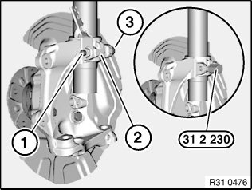
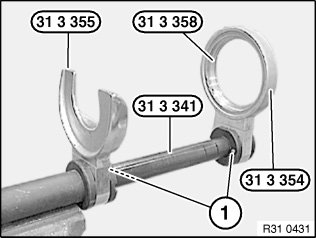
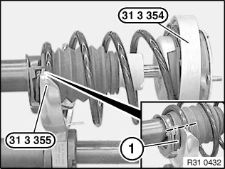
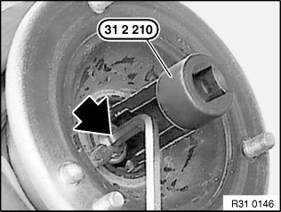
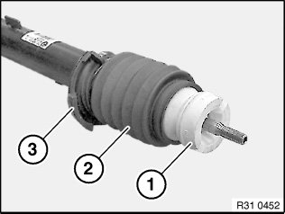
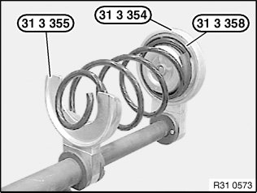
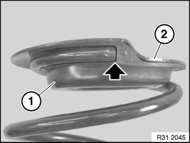
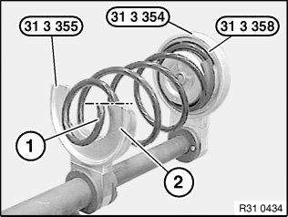
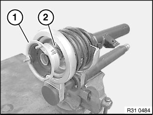
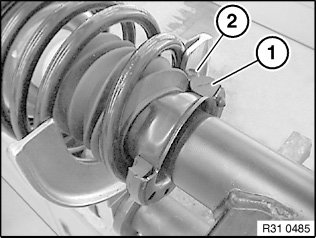

31 31 031 Replacing Front Left or Right Spring Strut Shock Absorber
31 31 031 Replacing front left or right spring strut shock absorberSpecial tools required:
Important!
- When replacing shock absorber/spring strut, renew auxiliary damper!
Warning!
Before using the special tool 31 3 340 take care to read through the Owner's Handbook!
All the safety information and instructions contained in the Owner's Handbook must be strictly observed!
Failure to observe these safety precautions and instructions increases the risk of serious physical injury, damage to your health and damage to property and equipment!
Important!
1. Prior to each use, check the special tools for defects, modifications and operational reliability.
2. Damaged/modified special tools must not be used!
3. No changes or modifications may be made to the special tools!
4. These special tools are intended solely for the purpose of tightening and relieving cylindrical and tapered suspension springs.
5. Keep special tools dry, clean and (down to the spindle) free from grease.
6. Impact screwdrivers are prohibited!
7. Do not compress coil spring to full extent.
Necessary preliminary work:
^ Remove front spring strut.

Release nut (1), remove holder (2) and remove screw (3).
Expand swivel bearing with special tool 31 2 230 and pull off spring strut.
Installation note:
Keep press fit of swivel bearing and spring strut in lower area clean and free from oil and grease.
Screw head must point in direction of travel.
Replace self-locking nut.
Tightening torque 31 31 3AZ.

Installation note:
Expand swivel bearing with special tool 31 2 230, align based on gap to positioning pin (1) on rear of spring strut and push together to stop.

Installation note:
Make sure swivel bearing contacts stop (1) correctly.

Removing:
Clamp special tool 31 3 341 in vice.
Install insert 31 3 358 in special tool 31 3 354.
Position special tools 31 3 355 and 31 3 354 with insert 31 3 358 from above on special tool 31 3 341 until retaining bolts (1) can be felt and heard snapping into place.
Check seating of special tools 31 3 355 and 31 3 354 with insert 31 3 358, correct if necessary.

Clean coil spring to remove coarse contamination and take up with special tools 31 3 355 and 31 3 354 with insert 31 3 358.
Twist spring strut until end of coil spring (1) is flush with end of special tool 31 3 355.
Warning!
Special tool 31 3 354 and centering ring 31 3 358 must rest correctly on the upper spring cup!
Bottom coil of coil spring must rest completely in recess of special tool 31 3 355!
Compress coil spring until stress on piston rod is relieved.

Take off protective cap.
Release nut with special tool 31 2 210 (grip piston rod in the process).

Remove support bearing (1), dust boot and supporting ring (2).
Remove shock absorber with auxiliary damper, gaiter and lower spring pad sideways from tensioned coil spring.

If necessary, remove auxiliary damper (1), gaiter (2) and spring pad (3) from shock absorber.

Relieve tension on coil spring.
Remove coil spring with spring cup from special tools 31 3 355, 31 3 358 and 31 3 354.

Installation:
Check spring pad (1) for damage, replace if necessary.
Attach spring cup (2) with spring pad (1) to coil spring.
Note:
End of coil spring must be positively aligned to spring pad (1).

Take up coil spring with spring cup using special tools 31 3 355, 31 3 358 and 31 3 354.
Twist coil spring until lower end of coil spring (1) is flush with end (2) of special tool 31 3 355.

Warning!
Do not compress coil spring to full extent.
Special tool 31 3 354 and centering ring 31 3 358 must rest correctly on the upper spring cup!
Bottom coil of coil spring must rest completely in recess of special tool 31 3 355!
Tension coil spring.

Check auxiliary damper (1), gaiter (2) and spring pad (3) for damage, replace if necessary.
Note:
Make sure spring pad (3) is correctly seated on shock absorber.
Insert shock absorber in tensioned coil spring.

Attach support disc (2) to piston rod.
Check support bearing (1) for damage, replace if necessary.
Attach dust boot and support bearing to piston rod.

Replace nut and tighten down with special tool 31 2 210(grip piston rod in the process).
Tightening torque 31 31 2AZ.
Fit cover cap.

Important!
Spring pad (1) must rest positively on spring cup (2)!
Upper end of coil spring must rest on stop of spring pad (1)!

Important!
Lower end of coil spring (2) must rest on stop of spring pad (1)!
Relieve tension on coil spring.
Check installation position of gaiter, correct fold if necessary.
After installation:
^ Carry out wheel alignment procedure.
^ Carry out steering angle sensor adjustment / alignment for active steering.